Tower types
Single pole towers
Very small footprint, but need a foundation for the pole and potentially guy wires to avoid movement. Cheap, easy to install without disturbing the environment. Access to the sensors is via portable ladder.
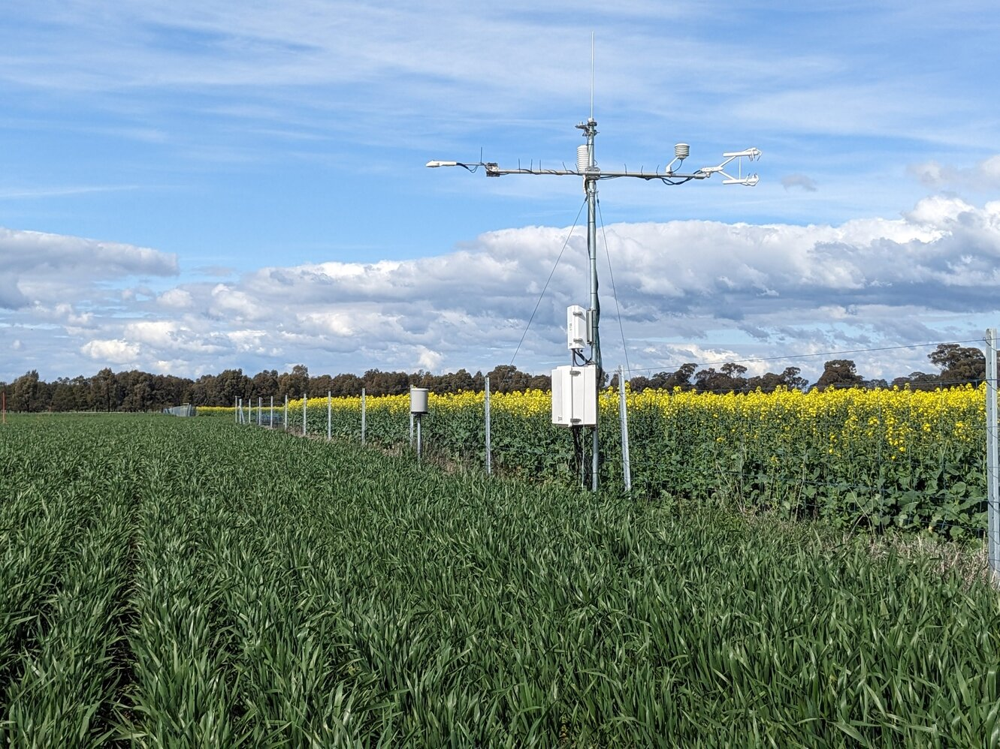
Tripod towers
Maximum height up to < 4 m. Tripod base has quite a large footprint. Easy to set up, allows to take the tower into the ecosystem with little disturbance and can be removed without leaving much of a trace. Legs can be adjusted to allow for uneven ground.
E.g. Campbell Scientific: CM106B-CSA
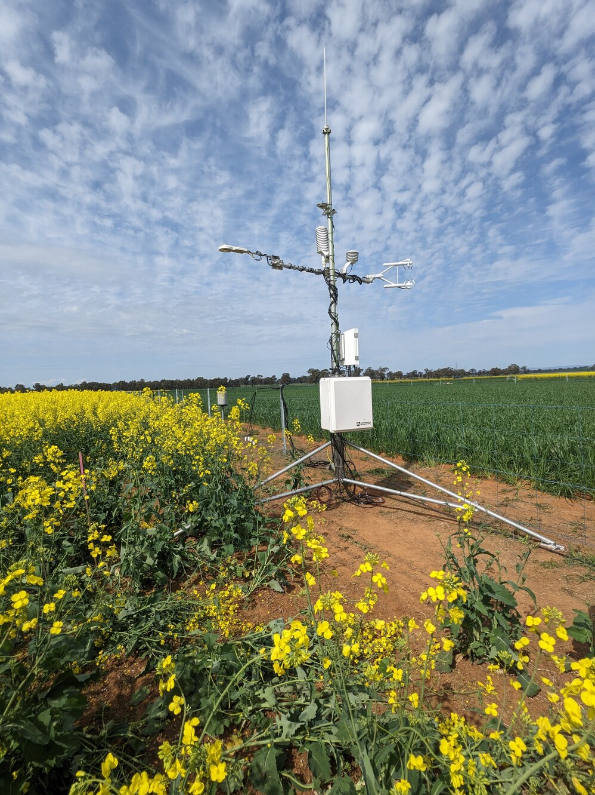
Lattice tower
NBS Masts: Telescopic, hinged/tilt, lattice towers
Hinged towers
Various heights up to 14 m. These towers can be climbed (working at heights certificate required). But the hinged construction allows to lower the tower down for instrument installation and maintenance to avoid climbing.
Available from:
APAC Portable Hinged Tripod Lattice Tower, AL340 Series
APAC Infrastructure Pty Ltd, Unit 6/33-47 Fred Chaplin Circuit, Caloundra, Sunshine Coast, QLD, 4551NBS Masts: Telescopic, hinged/tilt, lattice towers
NBS Masts, PO Box 7, Lindenow, Victoria, Australia, 3865, 03 5157 1203, sales@nbsmasts.com.au
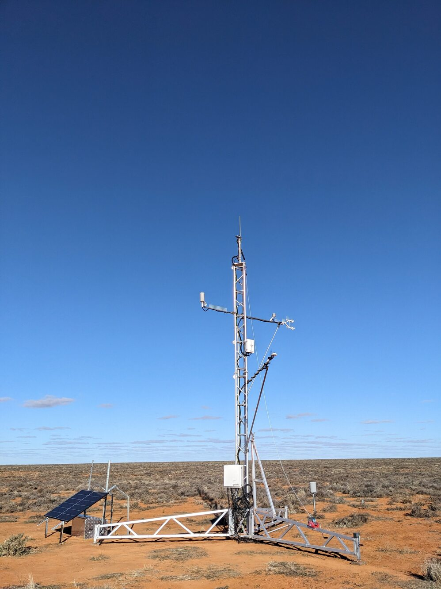
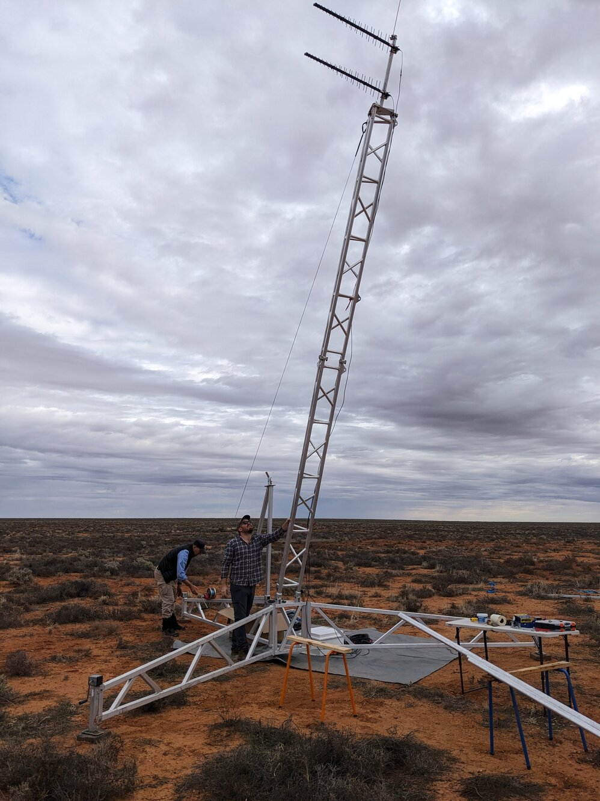
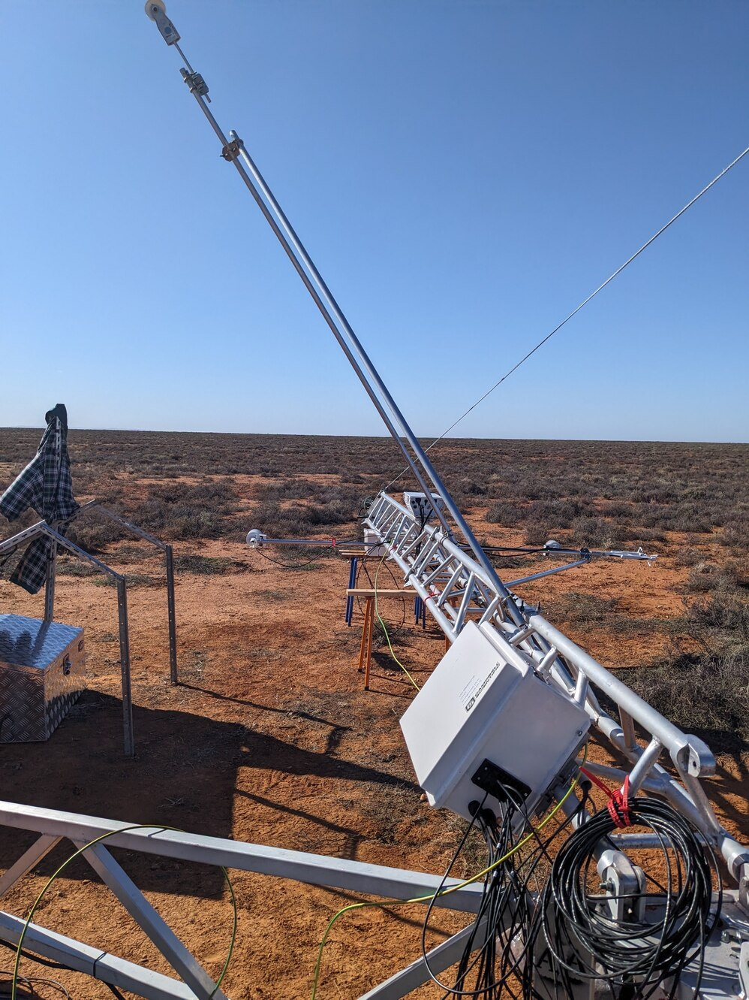
Foundations for small and/or hinged towers
These small or hinged towers do not require an extensive foundation in the ground. Two options of installing the APAC towers exist:
- Tripod: leave-no-trace, convenient, not as stable as surefoot base (see photos above).
- Surefoot base: very solid, but requires steel rods to be driven into the ground with a jackhammer at various directions. These rods can not be removed when the flux tower reaches its end-of-life or end of project. Rocky locations might hinder the installation of the ground rods. See APAC surefoot modules, and Surefoot base plate websites.
Telescopic towers
E.g. pneumatic towers:
EVTA Group Light telescopic towers
EVTA Group, Gisborne, 12 Meek Street, New Gisborne, Victoria, 3438NBS Masts - Telescopic-mast
NBS Masts, PO Box 7, Lindenow, Victoria, Australia, 3865
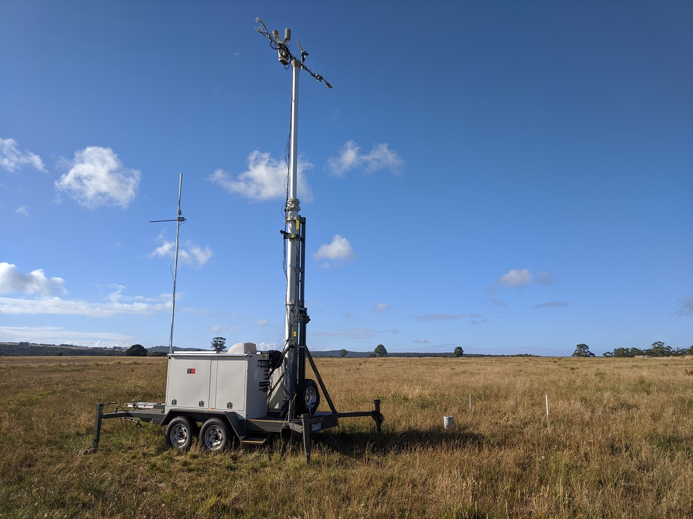
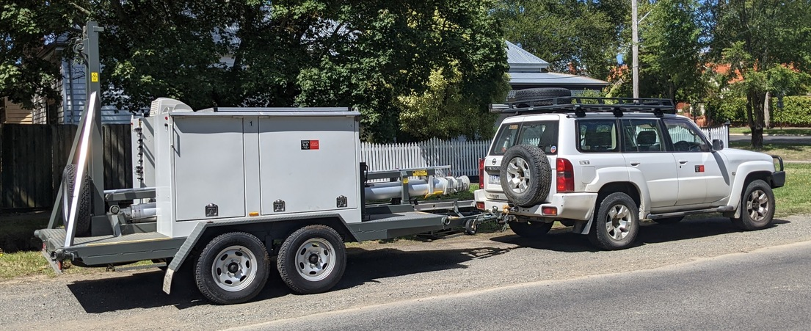
Scaffolding towers
No recommended in Australia!
OHS regulations require tower safety inspection every 30 days! But scaffolding towers are commonly used in Europe (Americas?) with and without guy wires up to 50+ m. Benefit: scaffolding towers are cheap to build, and can be built on location without bringing in large cranes. This allows to minimise disturbance of the ecosystem during the build phase. The scaffolding can be buit in close vicinity of trees / branches which potentially allows to undertake leaf-level measurements and sampling in the canopy. The small size and lack of disturbance minimises the updraft, “chimney” effect that surround tall towers. Scaffolding towers can even have internal staircases or short ladders that make working at height easy. Recommendations on tower size in relation to average tree canopy size, clear winner on infrastructure footprint.
Guyed towers
Small footprint, but usually require crane to install, hence more initial disturbance to the environment. Guywires allow for slim and tall tower structures. However, the guy wires can bring the tower down when a tree falls on them (see Warra and Wombat Forest incidents).
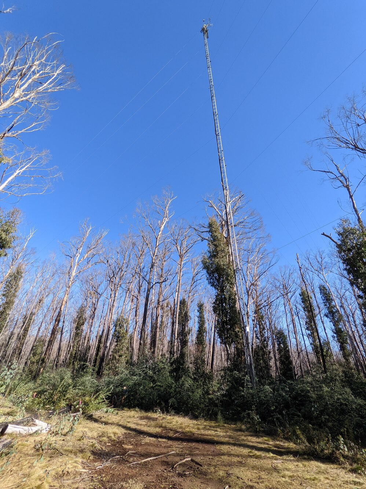
Stand-alone towers
Stand-alone towers but provide a safe and stable work platform without the danger of trees falling on a guy wire taking the tower down in the process. They requires considerable amount o construction work, that will affect the vicinity of the tower. Large and deep excavations for the foundation are required, causing considerable disturbance of the immediate ecosystem. Cranes are needed to install the tower that bring soil compaction, disturbance and might require removal of trees to allow the crane to turn. Good road access to the tower is required to bring in excavators concrete trucks and cranses. Tall stand-alone towers can be big enough for a stair case. That allows easy access to the instrumentation on top. With a regulation-conform staircase on the tower, climbing certificates might not be required, similar to a public look-out tower (check your local laws and regulations).
The large footprint of stand-alone towers allows generous platforms on top. Such platforms make it easy to work at height compared to sitting in a harness suspended off the tower. However, in some cases, it can be difficult to install instrumentation along the height of the tall stand-alone towers where there is no platform and if the desired instrument location is far away from the staircase or ladder. Large. tall towers like e.g. Tumbarumba, have a wide lattice construction, limiting options for accessing some locations without extensive climbing. Tube dimensions of lattice and tower legs might require specific instrumentation mounts that are not available off-the-shelf. Check with your tower-construction company reagding instrumentation mounts when designing the tower. Off the shelf towers from e.g. ROAM are designed to suit heavy mobile phone systems which use 60 mm OD steel pipes and square/angle brackets to install instruments. These poles and brackets are not suitable out-of-the-box to install flux-related instruments as these are usually designed around round maximum 48 mm OD tube sizes.
Manufacturers, engineering companies of stand-alone towers and telecommunication infrastructure:
Roam engineering Design, Manufacture and Construction of Steel Infrastructure
437 Victoria Road
Malaga, WA 6090 Australia
Phone +61 892 484 950
roam@roameng.com.au
–> Roam engineered the stand-alone Tumbarumba and Wombat Forest towersClive Steele Partners Consulting Structural & Civic Engineers
62/195 Wellington Road
Clayton, VIC 3168 Australia
Phone: +61 3 9545 0223
csp@clivesteele.com.au
–> Clive Steele Partners engineered the 36 m stand-alone Whroo flux towerAmplitel Tower infrastructure
Level 41, 242 Exhibition St
Melbourne, VIC 3000 Australia
Phone: 1800 267 548Everest infrastructure
Suite 801, 203 Robina Town Centre Drive
Robina, QLD 4226 Australia
Phone +61 7 5551 4338
info@everestinfrastructure.com.auFutureau Telecommunication engineering
7 Tamara Drive
Cockburn Central, WA 6164 Australia
Phone: +61 8 9417 4999
sales@futureau.com.au
See here for rigging companies that then build the tower at your location
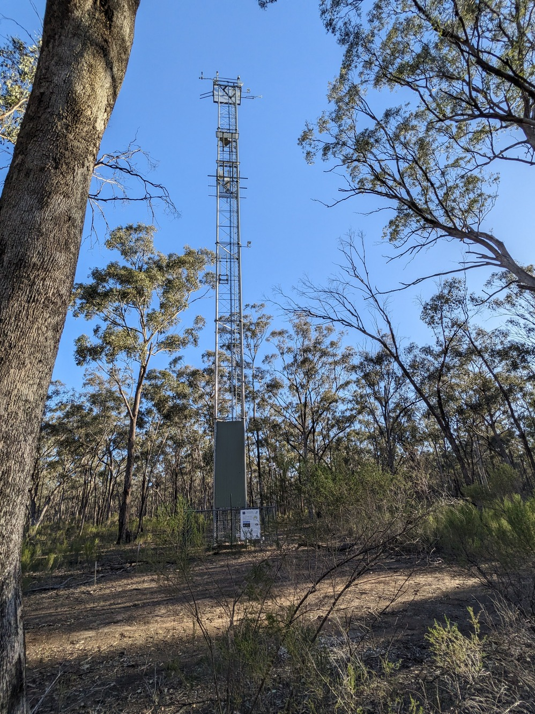
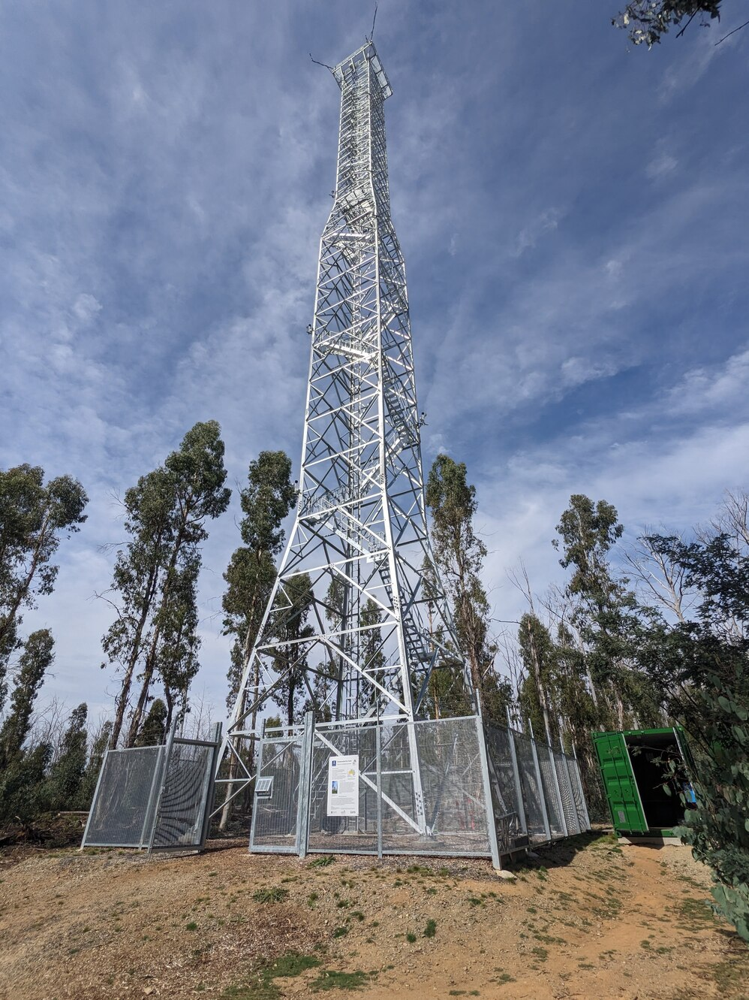
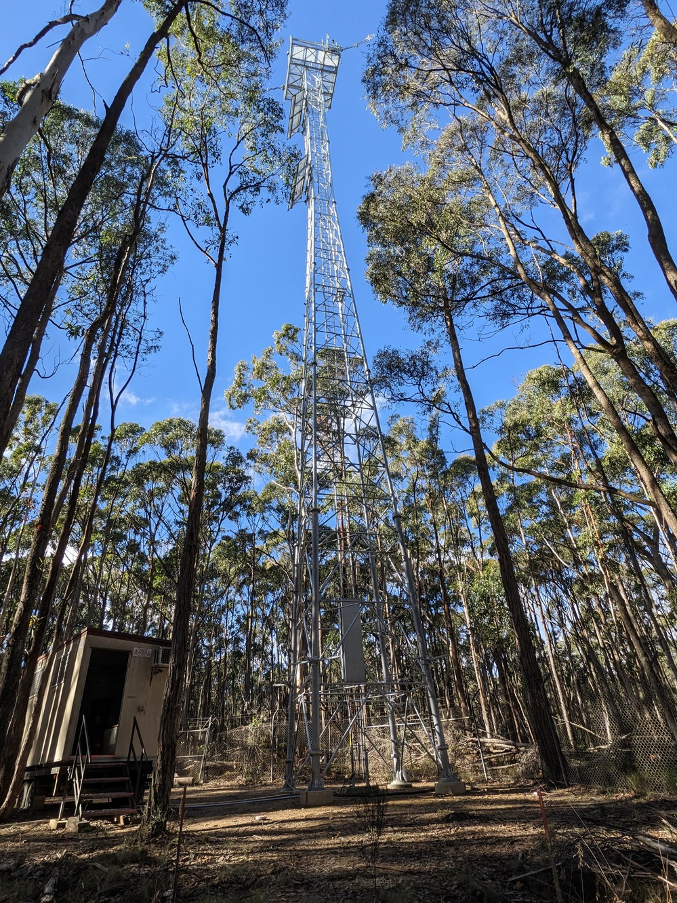